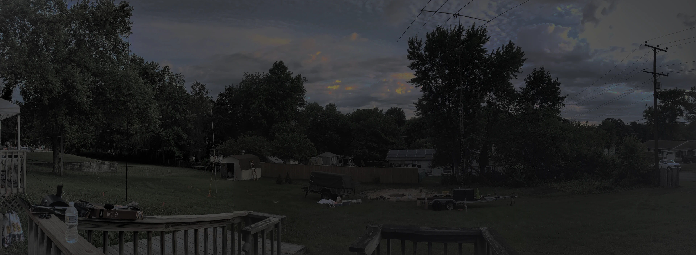
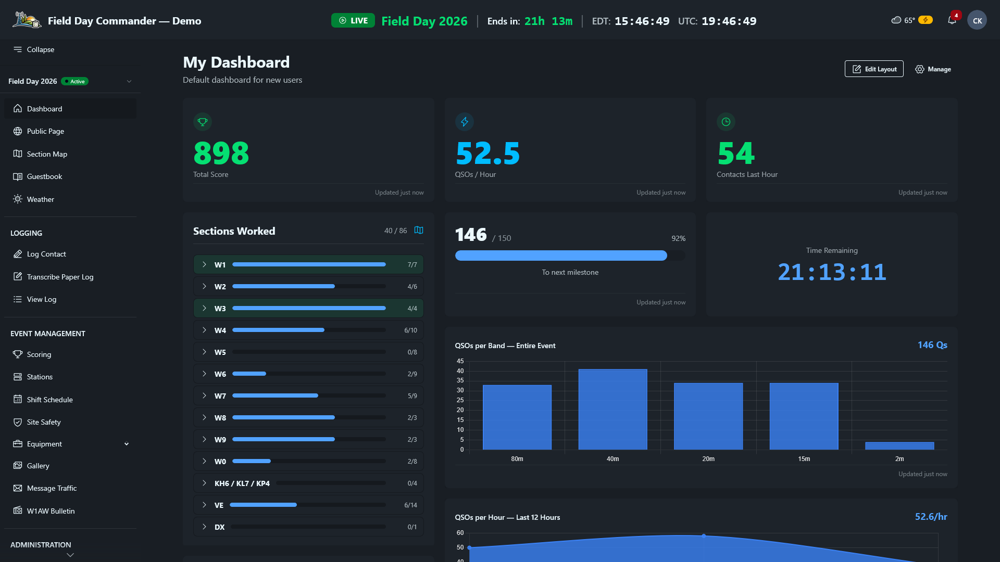
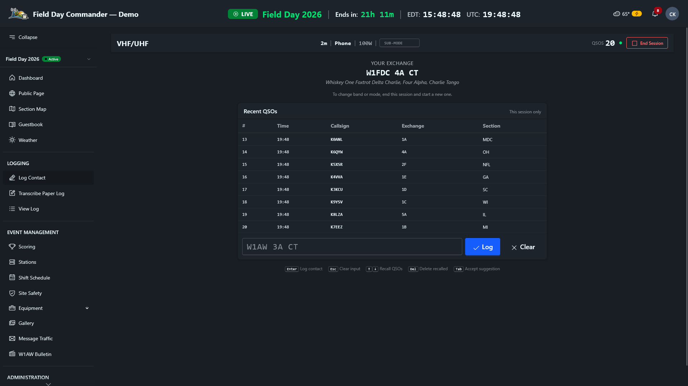
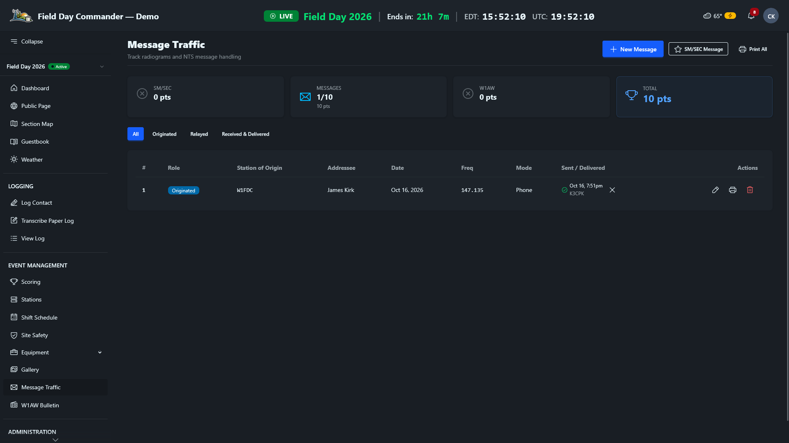
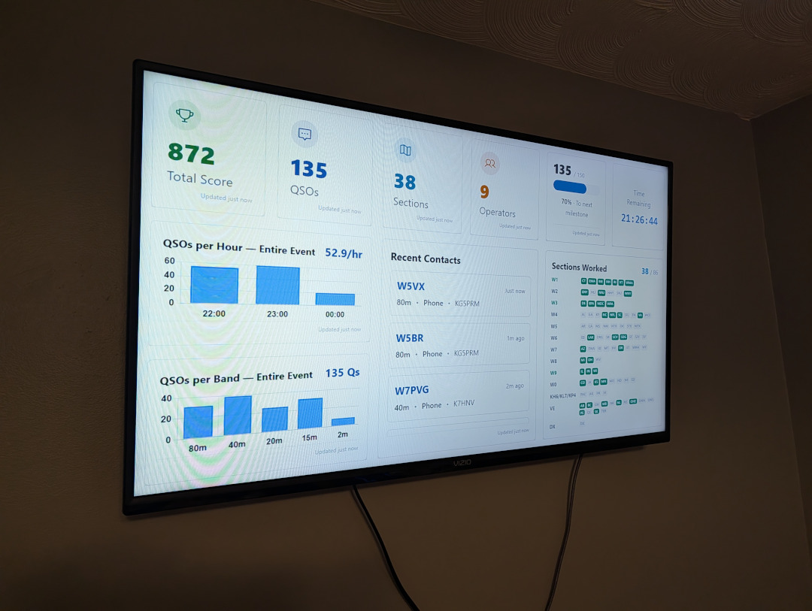

Plan the stations, people, and gear. Bring every station's contacts into one log, track NTS traffic and bonuses, and have your score ready when the weekend ends. Free, open-source software for ARRL Field Day and Winter Field Day.

Bring the gear list, volunteer schedule, and safety preparations together before setup day.
Know whether each station has what it needs. Members commit gear, you assign it to stations, and delivery and return checklists help keep borrowed equipment accounted for.
Let volunteers sign up for shifts and spot uncovered hours before the weekend. Share the work across operators, GOTA coaches, and safety officers.
Work through the event's safety checklist, then keep operators informed as conditions change. Post local alerts on every screen; optional internet-fed NWS warnings appear alongside them.

Open the built-in logger on a laptop, tablet, or phone. Every contact joins the club's shared log and updates the live score.
Live duplicate checks look across stations. Exchange validation helps catch mistakes while the contact is still in front of you.
On a shared computer set up in station mode, operators start their turn with their callsign.
Built-in UDP listeners receive contacts from N1MM Logger+, WSJT-X, JTDX, and fldigi. No double entry. You can also import an ADIF file.
If the browser loses contact with the server, built-in logging queues contacts locally and syncs them when the connection returns.
Keep the work beyond QSOs visible: radiograms, visitor sign-ins, GOTA activity, and bonus claims. See what's been earned and what still needs attention before the event ends.

Record originated, relayed, and received radiograms, track sent status, and follow the running message count and Field Day points.
Explore message traffic →Track your Section Manager or Section Emergency Coordinator message separately. Save the over-the-air W1AW bulletin copy for your submission records.
Eligible visitor sign-ins, GOTA activity, message traffic, and safety checklists feed the bonus tally. Add manual claims for activities such as publicity and education, then review the breakdown with your QSO score.
See how bonus tracking works →Choose activities and plan the evidence with the bonus guide. Winter Field Day uses its own objectives; message traffic stays available for your records without bonus points.
Plan your bonuses and objectives →
Give operators between shifts and visitors at the site a live view of the weekend: score, QSO rate, sections worked, and time remaining.
Follow the score and see when the bands are producing.
Watch the map fill in as the club reaches new sections.
See how much operating time is left to make the next contact.
Give the team a shared record of the weekend, so the chairman isn't left gathering separate logs and chasing bonus details after teardown.
Let event managers coordinate the event, station captains prepare their stations, and operators log contacts. Adjustable permissions let you fit access to the way your club works.
Check the combined QSO score and Field Day bonuses, or Winter Field Day objectives, before preparing the entry.
Download the event's Cabrillo log and submission summary. Export ADIF for the club log or CSV for your own analysis.
See the Field Day submission walkthrough →The log, event photos, and reports give your club material to review and share after the radios are packed away.
Take a look around the live demo, then share it with your Field Day team. When you're ready, the install guide walks you through setting up your club's server.
Run these commands on your server. Replace YOUR_SERVER_HOSTNAME with a hostname your station devices can resolve. For a Pi named fd-commander, that may be fd-commander.local; verify it on your network first. Choose your server address.
git clone https://github.com/ckoval7/fielddaycommander.git
cd fielddaycommander
sudo ./deploy.sh --domain YOUR_SERVER_HOSTNAME
http://YOUR_SERVER_HOSTNAME using the same address
Ready for Field Day · 73